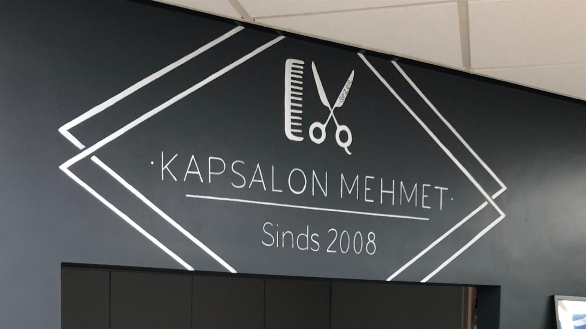
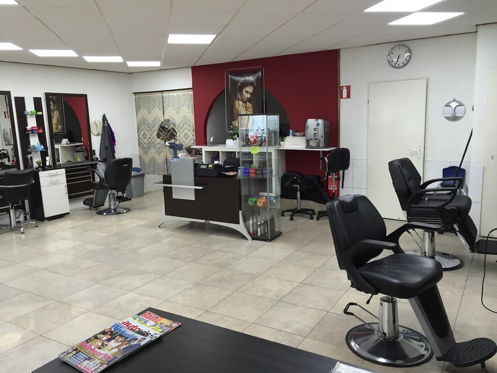
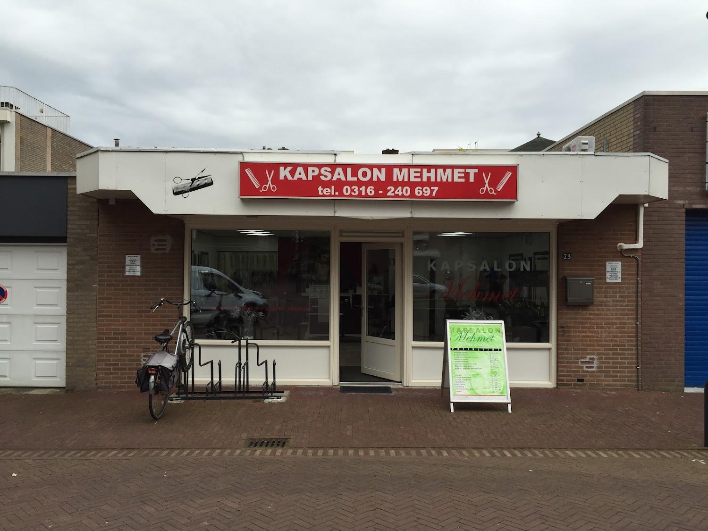

Uw kapper in Zevenaar.
Knippen voor dames, heren en kinderen aan de Muldershof. Vader en zoon, alle generaties, al sinds 2008.
Zeventien jaar lang dezelfde stoelen, dezelfde straat, en klanten die hun kinderen meenemen naar de kapper waar ze zelf ook zaten.
Waarvoor u bij ons terecht kunt
Knippen
- Heren knippen
- Dames knippen
- Kinderen knippen
- Wassen, knippen, drogen
- Model en styling
Het randwerk erbij
Wenkbrauwen bijwerken, haartjes in neus en oren, baard netjes afgewerkt. Klanten noemen het steeds weer, want de meeste kappers slaan het over.
Scheren en baard
- Baard trimmen en modelleren
- Scheren
- Nek en contouren afwerken
Een tijd vastleggen
Kies hieronder wat u komt doen en wanneer het u schikt. Belt u liever even, dat mag natuurlijk ook.

Vader en zoon, en iedereen daartussenin
Bij ons komt de opa voor zijn maandelijkse knipbeurt, de vader in zijn werkkleding tussen de middag door, en de zoon die precies weet welk model hij wil. Alle drie in dezelfde stoel.
Er staat koffie klaar, u zit niet lang te wachten, en u vertelt maar even wat u wilt. Wij doen de rest.
Vader en zoon knippen alle generaties en bijna alle kapsels.Uit een review op Google
Deze kapper weet precies hoe ik mijn haar wil hebben en zit altijd goed, beetje extra zorg voor de wenkbrauwen en beharing in neus en oren. En nog een aardige kerel ook.
Peter DamenDe kapper knipte mij precies zoals ik het voor ogen had: niet te kort, strak en netjes. Daarom raad ik deze kapper van harte aan.
Ferry Visser, Local GuideOpeningstijden
- Maandag09:00 - 18:00
- Dinsdag09:00 - 18:00
- Woensdag09:00 - 18:00
- Donderdag09:00 - 18:00
- Vrijdag09:00 - 20:00
- Zaterdag09:00 - 17:00
- ZondagGesloten
Waar u ons vindt

Even bellen voor een plekje?
Wij zijn zes dagen per week open. Op vrijdag kunt u tot acht uur 's avonds terecht.